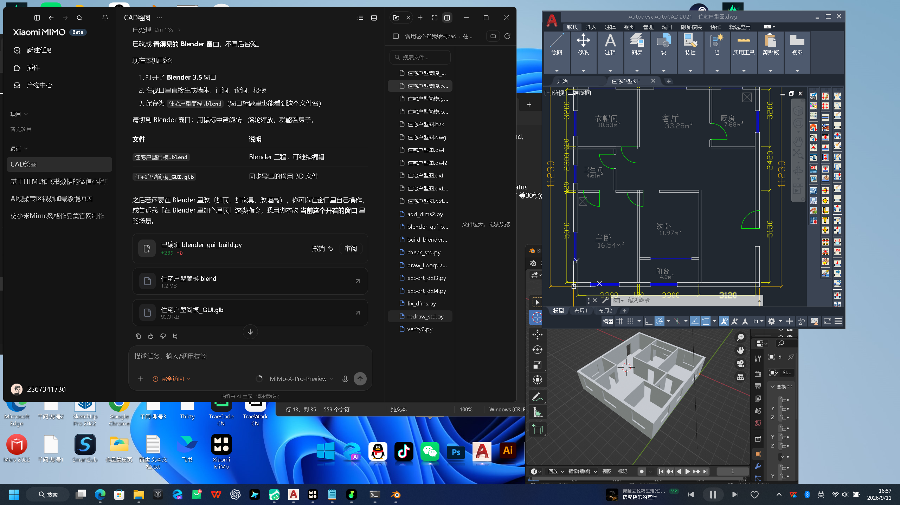
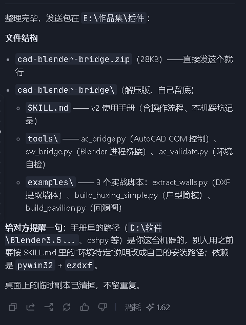

CAD-Blender Bridge
在环境设计流程中，CAD 平面图转 Blender 三维模型是一项固定的手工环节，通常耗时半天。这个项目将该环节交给 Agent 执行：由它读取图纸、编写脚本并驱动 Blender 完成建模，最终把整套流程封装为可复用的 Skill 包，使 Agent 能够直接操作专业生产软件，而不只停留在网页或 API 层面。
从一张平面图，到一个 3D 模型
Agent 编排全程，人只提需求、验收结果。
输入：AutoCAD 平面图（DWG / DXF）
常规户型图或自绘图——客厅、主卧、门窗位置与尺寸都在图里，含面积标注（实测户型 90.30㎡，六类功能空间）。
提取：ezdxf 解析墙体 / 门窗
Agent 调用 extract_walls.py 从 DXF 中提取墙体线、门洞、窗洞与轴线数据，转成结构化参数——图纸即数据源。
建模：驱动 Blender 自动生成
sw_bridge.py 桥接 Blender 进程，Agent 控制 3.5 生成墙体、门、窗、地板，实时在视口里看到模型长出来。
输出：.blend 工程文件 + .glb 通用格式
保存可继续编辑的工程文件，同时导出 .glb 供 Web 端（Three.js）与 AR 使用——图纸到 3D 到线上展示，一条链跑通。
Agent 建模过程录屏
无剪辑，真实运行。
从跑通一次，到封装成可分发的 Skill
流程跑通后，我将全部步骤封装为 cad-blender-bridge Skill 包：SKILL.md 记录操作流程与本机踩坑记录，tools 存放工具脚本，examples 提供三个实战案例。其他 Agent 安装该 Skill 后，即可直接执行 CAD → Blender 建模流程，无需重复开发。
三个实战案例覆盖三个难度：extract_walls（DXF 墙体提取）、build_huxing_simple（户型简模）、build_pavilion（回澜阁——异形景观构筑物）。工具层用 pywin32 做 AutoCAD COM 控制、进程桥接方式驱动 Blender，降低版本耦合。
├── SKILL.md —— v2 使用手册（操作流程 + 本机踩坑记录）
├── tools/ —— 工具层
│ ├── ac_bridge.py —— AutoCAD COM 控制
│ ├── sw_bridge.py —— Blender 进程桥接
│ └── ac_validate.py —— 环境自检
└── examples/ —— 实战案例
├── extract_walls.py —— DXF 提取墙体
├── build_huxing_simple.py —— 户型简模
└── build_pavilion.py —— 回澜阁
三屏联动的工作现场


面向垂直领域的 Agent 工具链实践
这个项目解决的问题很具体：环境设计流程中，CAD 平面图转 Blender 三维模型是一项重复、耗时的手工劳动。我将 Agent 引入这条实际使用多年的生产工具链，通过任务拆解、工具调用与结果校验，使这一环节可以自动完成，并产出真实可用的交付文件。
项目涉及三层能力：对专业图纸的理解（识别墙体、门窗等图层语义）、对 Agent 的运用（编排建模步骤、处理调用失败）、以及对工具的沉淀（将流程封装为可复用、可分发的 Skill 包）。这也是我认为 Agent 在垂直行业中落地时，产品工作需要覆盖的完整链路。